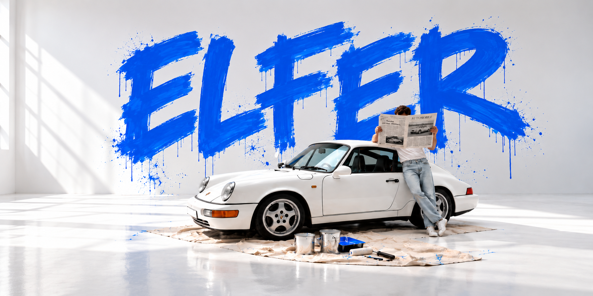

KAUFEN
Wir kaufen ausgewählte klassische und zeitlose Porsche direkt, fair und mit Blick für Historie und Substanz.

Einblicke in unsere Welt der Klassiker.
HANDPICKED WITH PASSION.
Wir kaufen ausgewählte klassische und zeitlose Porsche direkt, fair und mit Blick für Historie und Substanz.
Wir bringen besondere Porsche mit den passenden Liebhabern zusammen – persönlich, diskret und nachvollziehbar.
Wir verkaufen sorgfältig ausgewählte Porsche, deren Charakter, Zustand und Geschichte überzeugen.
Wir freuen uns darauf, Ihr Fahrzeug und seine Geschichte kennenzulernen.
Fahrzeug verkaufen